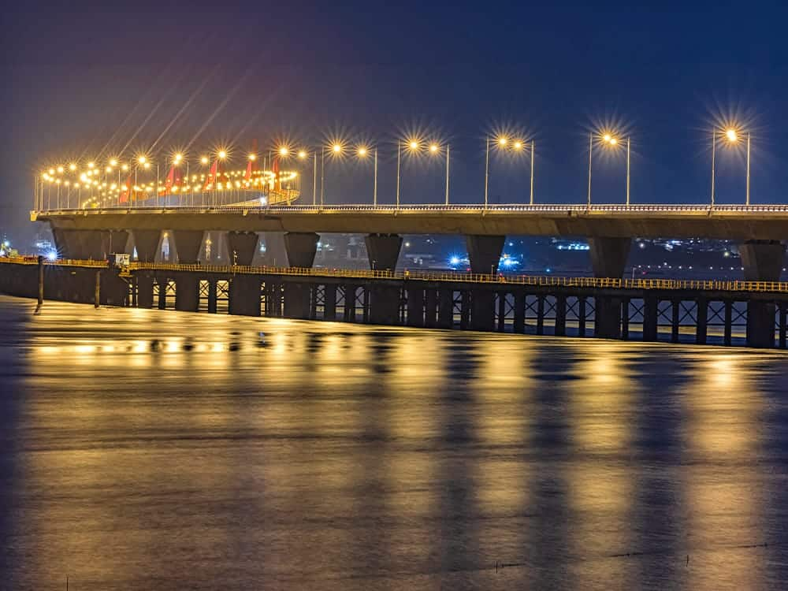
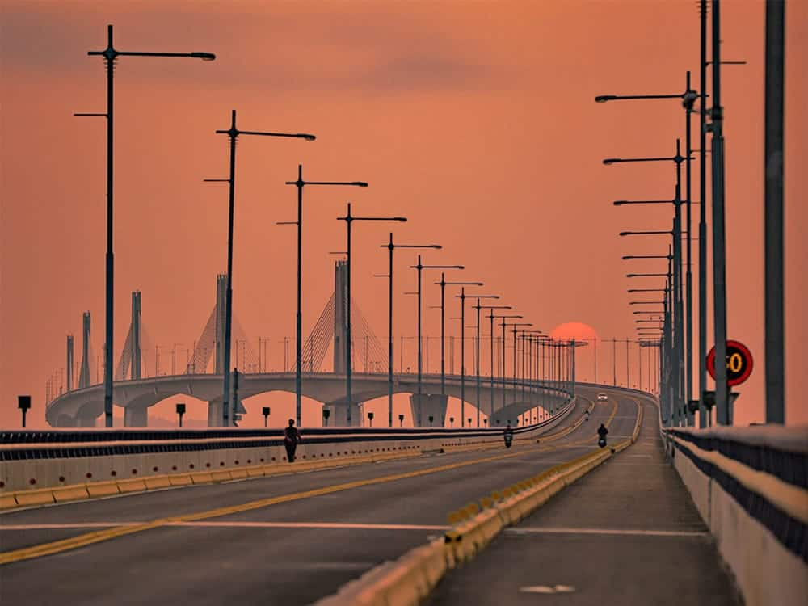

玩樂攻略
以下是幾個推薦：
- 金門大橋兩側的觀景平台設有停車場，方便遊客停車拍照。
- 夜間大橋的燈光秀非常迷人，建議在橋邊欣賞其璀璨的燈光設計。
- 探索小金門的自然景觀，適合騎單車或散步。
景點介紹

防雷區公園
從防雷區公園的視角望向大橋，可以看見蜿蜒的橋景，夜間點燈時，猶如一座閃閃發亮的巨型皇冠，吸引許多攝影師專程前來捕捉。

金寧端橋頭
站立在金寧端起始點最外側的人行道上，可以拍攝逐漸上升的大橋、來往的車輛以及五座縱向並列的橋塔，每年約3月中及9月中更有機會捕捉到期間限定的大橋懸日。
開放時間及交通
開放時間：24小時
門票資訊：免費
大眾運輸: